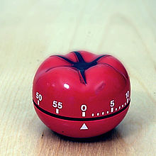

Taking Breaks in a Disciplined Way
I worked with a team where everyone was trying to do pair-programming, but it was too hard for them.
I asked what made it so hard, and they told me it was simply so exhausting. They were slumping in their seats by 10:30 in the morning, and by mid-afternoon, their productivity had plummeted.
I looked around the room to see if everyone had the same experience. They all nodded their heads. This was the big problem that was plaguing them.
I asked them how they were doing the pairing. They were forming up in pairs, and working all morning straight through without break. They went to lunch, and after lunch rejoined their partner and worked until quitting time.
They really were sticking with the pairing, and I had to admire their dedication. They were working so hard to try to build great software and working so hard at pairing that I was deeply touched.
But here is the problem, too. They were working too hard at it to be able to do it well.
Biological Beings
We are biological beings. We’re neither machines nor creatures of pure will and thought. We have human bodies housing human brains, and there are biological needs beyond mere nutrition, respiration, and elimination.
Thomas Davenport described “knowledge workers” as a people who “primarily rely on their brains rather than their bodies in [doing] their jobs.” Developers, testers, managers, service, support, finance, sales … most people in the software trade are knowledge workers by this definition.
We, as a species, have uniquely large brains. It’s said that 20% of our daily calories are burned in the brain, not in the muscles or other organs. That’s one expensive organ. Knowledge workers tax that organ more than most laborers.
That organ is biological, not mechanical. We can either try to work with the biology of that organ, or we can be subject to the weaknesses and frailty of the organ itself.
We have decades of people working hard to improve focus and extend the time that one can focus. We know that distractions are annoying and disrupt our train of thought. We are aware of the costs of multitasking, and especially of processing low-value interrupts (such as most notifications from social media and a lot of our low-business-value conversations). We have learned to hyper-focus on one topic for extended periods.
As reasonable as this sounds, a number of recent studies have concluded (as Graham Wallas hypothesized in 1926) that a brain works better if it has some distracted time so that it may “incubate” ideas while doing other things.
Srini Pillay said in May 2017’s issue of Harvard Business Review that a brain can take only so much focus. Excessive focus, he says, exhausts the focus circuits in your brain, draining your energy, making you more impulsive and less helpful. His article states that the brain operates best when it toggles between focus and unfocus (which I call “the prairie dog brain”).
Prairie dogs poke their heads up out of their dens from time to time to check for predators or opportunities in their environment. They don’t stay buried all day long.
My Prairie Dog Brain likes to (figuratively) pop its head up and sniff the air for interesting opportunities or threats in the environment. Rather than being hyperfocused all day, I need to seek the occasional distraction in order to do my best work.
In his book Tinker, Dabble, Doodle, Try, Pillay relates the story of one of his hospital supervisors telling him that “taking breaks to allow thought to congeal is one of the most important aspects of a true education.”
In addition, a 2018 Forbe’s article titled “Why The 8-Hour Workday Doesn’t Work” declares that people who take regular hourly breaks outperform people who work longer hours. It might be that leaving your desk might be the best thing you can do to increase your productivity. This is conter-productive, of course. If I spend less time working I will get more work done? Ludicrous – except that it is true.
The Water Analogy
Consider, as an analogy, hydration on a long-distance hike.
You will naturally lose water to breathing, perspiration, etc. You will run low on water if you don’t replenish.
When you are dehydrated, your performance will suffer and your being may take damage. In severe cases, your body may fail entirely.
It is recommended that you drink water to avoid dehydration (and alternate with sports drinks to avoid hyponatremia) on your trip.
Some sources recommend a cup of water every 15 minutes if you’re on an endurance walk.
That is considerably more than if you’re sitting at home watching TV.
When you are working with your brain all day long, you are doing some “endurance thinking.”
The brain has a “normal” attention span of about 20 minutes, and yet people struggle to keep it focused on the work at hand for hours.
Just as a hiker needs to drink water frequently, you will need to refresh your brain periodically.
Rather than taking breaks because we are tired, we take breaks so that we do not become tired.
If we allow ourselves to become tired, then we will need longer breaks to recover, and will work less well before and after the breaks.
Just as you might have to drink when not thirsty, you will need to take a break when not exhausted.
Disciplined Break Taking emerges
A past mentor of mine was famous for an interesting trick: when teaching a week-long event, he gave the class a ten-minute break every hour. The team was able to work on their individual projects and assimilate new ideas much faster.
This worked nicely and had a good rhythm to it.
Around this time, I also read an article by John Richardson on “The Power of 48 Minutes” in which Don Crowther claimed that he could achieve and sustain a state of flow more quickly and predictably if he worked 48 minutes without distraction, and then took an (obscenely long) 12-minute break. Since then he has reduced his break to 10 minutes.
… 48 minutes is the magic number. Here’s how it works… Set a timer for 48 minutes. Close out all distractions and work continuously for 48 minutes. When the timer goes off, get up and stretch, get coffee, use the restroom, etc, in the following 12 minutes. Repeat as necessary.
Around the same time period, the Pomodoro Technique emerged and became popular. In the Pomodoro method, you work for 25 minutes and take a 5-minute break, which lands you at about 50 minutes of work per hour.

The Pomodoro technique is named for a tomato-shaped timer used by Francesco Cirillo when he formed the original concept.
The Pomodoro technique has been fine-tuned since the late 1980s and is a popular and widely respected way to maximize productivity.
This seems to be a pattern to the 50-minute hour.
The story continues (and concludes)
The team I spoke of at the top of the blog post were exhausted every day, for most of the day.
I didn’t have Disciplined Breaks worked out then, but I knew about Pomodoros. I set up a timer, and we used 25/5 “standard” Pomodoros.
Success! The team completed the work planned for a full day before noon. Pretty impressive! We had 100% increase in productivity immediately.
By mid-morning one of the team members had mentioned that they weren’t tired and didn’t need a break. At that point, we reminded them that we don’t take breaks because we are tired, we take breaks so that we are never tired.
The team member took the break, as we all did.
By mid-afternoon, the team had accomplished the following day’s work. They had completed two days’ work in 75% of one day! I realized that exhaustion was the team’s biggest problem (as they assured me it was in the morning coaching session). I felt elated.
However, part-way through the next break, a manager addressed the team and said “are you all goofing off again? Already?”
The team’s enthusiasm drained out of them. Their eyes went to the floor. They ducked their heads and mumbled, “I’m not going to take this break, I’ll just work through it.”
To the best of my knowledge, that team never again took a break during their workday. They may never have had a boost in productivity like that again. I hope that they eventually negotiated a break-taking schedule with their managers. I just don’t know.
If you are coaching or managing a team, then you probably should repeat my success and avoid my failure.
I’ve since had many successes with other teams. I have learned my lesson and work more closely with the team managers when possible.
Rules of Disciplined Break-Taking
Break taking is not a very complicated idea, but in order to fit it into a business context, we find that we need to surround it with some very special rules.
There is a perception problem with breaks. Managers can see people not working, fear for lost productivity, and demand that they return to work. From the information given so far in this blog post and your personal history, you can see that breaks will increase productivity if they are done correctly and the managers will allow it.
In order to make this a safe experiment for others to try, I added some rules and have tuned them for about a year. Disciplined Breaks is the best set of rules I’ve used personally and have shared with teams.
Work out the experiment with the team’s boss if necessary. If not, then please freely take and use these rules. Expand them for your own context, or simply use the Pomodoro Technique.
Disciplined break-taking is, as I’ve defined it so far:

Schedule it.
If you don’t schedule the break, you’ll not notice it’s time and you’ll skip it.
You’ll end up tired and will need a longer break to recover.Leave the area
Don’t stay seated in front of your computer. Get out of the cubicle, the room, the space you’re working in. Move. If you stay, you won’t really take a break.Attend to Biology
Yes, this includes the obvious reason people often take breaks, but also consider getting a drink of water or a healthy snack. Keep your biology in a brain-supporting state.Change Something
Change your focal length (look out a window), change the atmosphere (go outside), change your state of mind (rest, meditate), change company (call home). Do something non-work like so that you can tolerate being away for 10 minutes.Return Promptly
The major reason managers fear letting teams take breaks is that once you let people go, you don’t know how soon you can get them back. Whether using Disciplined Breaks (this method) or Pomodoro, or any other method you will need to be trustworthy and not leave your work for “too long.”
I recommend setting a timer on your phone or smart watch for 8 minutes so it will remind you to come back on time.
There are immediate and significant gains possible through disciplined break taking.
Please give it a one-week or a one-sprint try. You will be surprised how well you can perform when you are working with biology, and not against it.
After all, we’re not machines.